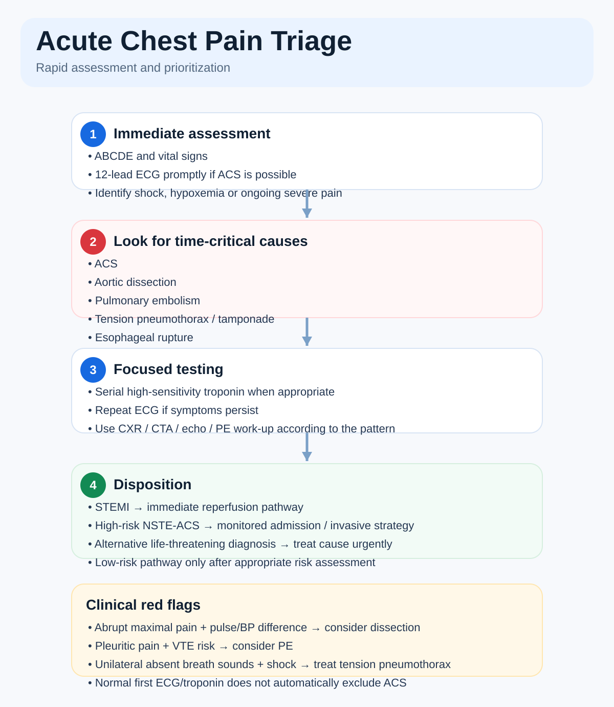
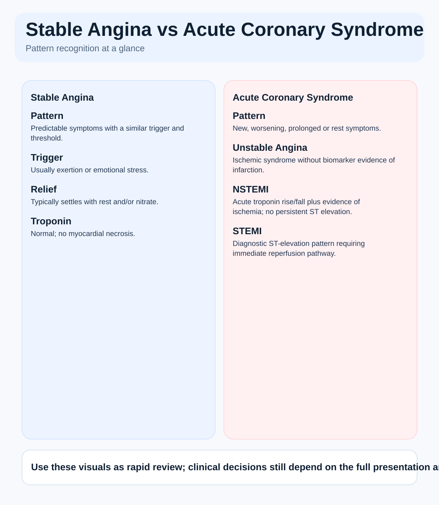
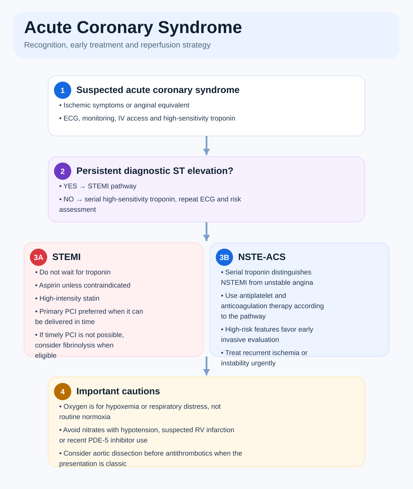
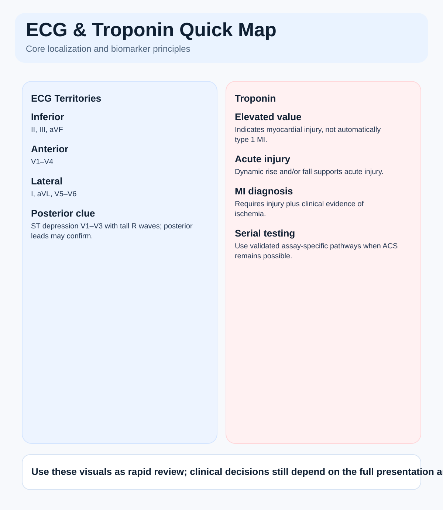
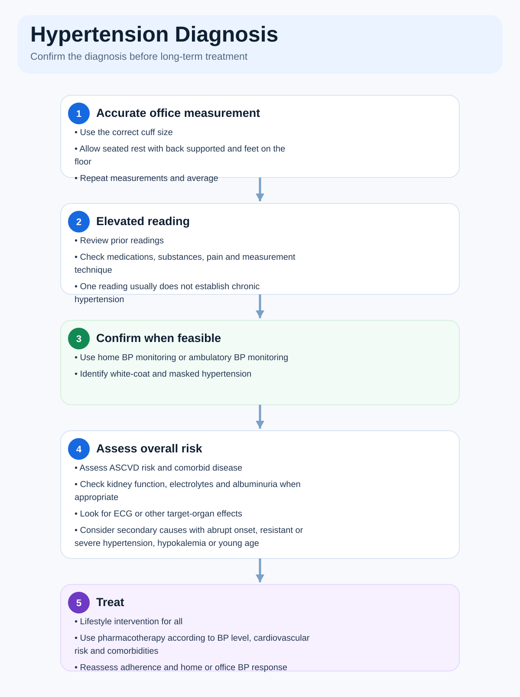
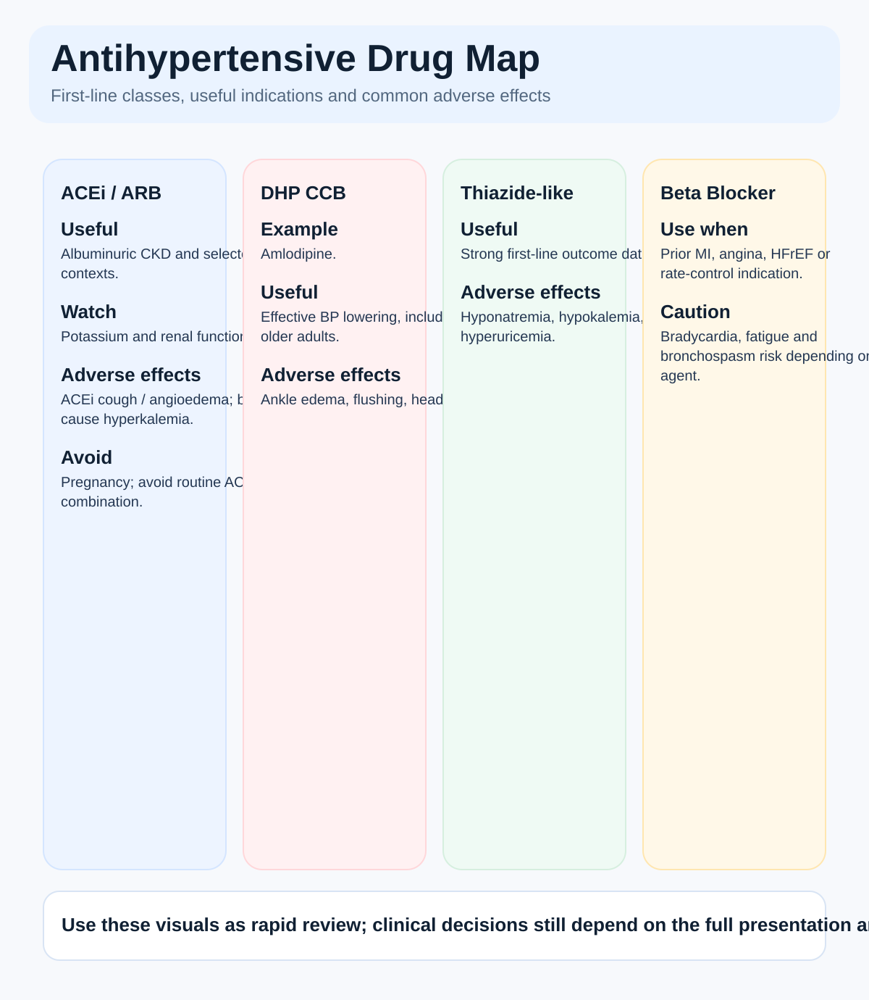
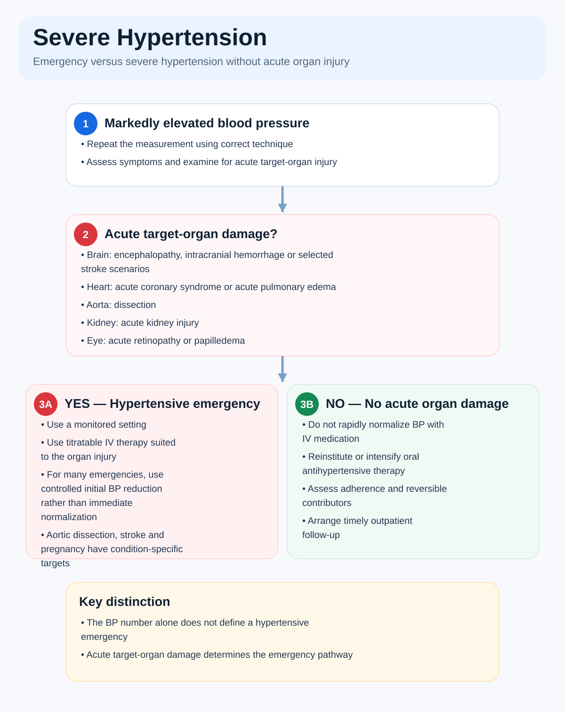

Day 2 — Cardiology I
Chest pain • ACS • ECG/troponin • hypertension • prevention
Chest Pain Differential & Red Flags
High-yield clinical review with decision-making focus.
Definition & first principle
Chest pain is a symptom, not a diagnosis. The first task is to identify time-critical causes before deciding it is benign.
Life-threatening causes to actively exclude
| Diagnosis | Clues | Immediate priority |
|---|---|---|
| ACS | Pressure/heaviness, exertional or at rest, radiation, diaphoresis, dyspnea, nausea; atypical presentations occur | ECG + serial hs-troponin; initiate ACS pathway if suspected |
| Aortic dissection | Abrupt maximal pain, back radiation, pulse/BP differential, neuro deficit, new AR murmur | Urgent aortic imaging/surgical pathway; avoid anticoagulation if suspected |
| PE | Pleuritic pain, sudden dyspnea, tachycardia, hypoxemia, VTE risk | Risk-stratify and investigate urgently |
| Tension PTX | Shock, unilateral absent breath sounds, distended neck veins, severe dyspnea | Immediate decompression if unstable |
| Tamponade | Hypotension, raised JVP, muffled sounds; pulsus paradoxus | Urgent echo + drainage pathway |
| Esophageal rupture | Severe pain after forceful vomiting, systemic toxicity, subcutaneous emphysema | Urgent surgical evaluation |
🔥 Pattern recognition
Pressure + exertion + autonomic symptoms → ischemia until proven otherwise. Pleuritic pain suggests PE/PTX/pericarditis, but does not automatically exclude ACS.
Common traps
- Calling pain “atypical” and stopping the ACS assessment.
- Assuming reproducible tenderness completely excludes ACS.
- Giving antithrombotics before considering aortic dissection when the story is classic.
🧭 Chest Pain Triage Algorithm
Open only when you want a visual review
Stable Angina vs ACS
High-yield clinical review with decision-making focus.
Core distinction
Stable angina/chronic coronary syndrome has a predictable trigger and threshold. ACS implies acute plaque instability or acute myocardial ischemia/infarction and needs urgent assessment.
Stable angina vs ACS
| Feature | Stable angina | ACS |
|---|---|---|
| Pattern | Predictable, reproducible | New, worsening, prolonged or rest symptoms |
| Trigger | Exertion/emotional stress | May occur at rest or minimal exertion |
| Relief | Rest ± nitrate | May persist despite rest |
| Troponin | Normal | Elevated in MI; may remain normal in unstable angina |
| Urgency | Outpatient risk stratification if stable | Urgent ACS pathway |
Don't confuse with
NSTEMI = ischemic symptoms/evidence + acute troponin rise/fall without persistent ST elevation. Unstable angina = acute ischemic syndrome without biomarker evidence of infarction.
Memory line
Stable = same trigger, same threshold, settles. Unstable = new, more, longer, lower threshold, or rest.
🖼️ Stable Angina vs ACS
Open only when you want a visual review
STEMI / NSTEMI Diagnosis & Initial Treatment
High-yield clinical review with decision-making focus.
Recognition
ACS includes unstable angina, NSTEMI and STEMI. Obtain a 12-lead ECG promptly and use serial high-sensitivity troponin when appropriate. STEMI is primarily an ECG/reperfusion diagnosis—do not wait for troponin.
💊 Key doses / numbers
162–325 mg chewed unless contraindicatedNitroglycerin0.3–0.4 mg SL q5 min up to 3 doses if appropriate; avoid with hypotension, suspected RV infarct or recent PDE-5 inhibitorHigh-intensity statin examplesAtorvastatin 40–80 mg or rosuvastatin 20–40 mgOxygenUse for hypoxemia/respiratory distress rather than routinely in normoxiaSTEMI vs NSTEMI
- STEMI: compatible symptoms + diagnostic ST-elevation pattern → activate reperfusion pathway immediately.
- NSTEMI: acute troponin rise/fall plus ischemic evidence without persistent ST elevation → risk-stratified antithrombotic and invasive strategy.
- Primary PCI is preferred when it can be delivered in a timely fashion; if it cannot and early STEMI has no contraindication, fibrinolysis may be considered according to protocol.
High-yield traps
- Waiting for troponin in a clear STEMI.
- Giving nitrates to a hypotensive patient or suspected RV infarct.
- Routine oxygen in a normoxic patient.
- Forgetting aortic dissection before giving antithrombotics when the presentation is classic.
🧭 Acute Coronary Syndrome Algorithm
Open only when you want a visual review
Troponin & ECG Interpretation Basics
High-yield clinical review with decision-making focus.
High-sensitivity troponin
Troponin above the assay's 99th percentile indicates myocardial injury, not automatically type 1 MI. Acute MI requires a rise/fall pattern plus clinical evidence of ischemia.
Important non-ACS causes of troponin elevation
Heart failure, tachyarrhythmia, myocarditis, PE, sepsis, renal disease, severe hypertension and other critical illness can cause myocardial injury.
ECG territory basics
| Leads | Territory |
|---|---|
| II, III, aVF | Inferior |
| V1–V4 | Septal/anterior |
| I, aVL, V5–V6 | Lateral |
| V1–V3 ST depression + tall R | Consider posterior MI |
Memory
Troponin tells you injury; the history + ECG + kinetics tell you why.
Trap
A normal first ECG or very early troponin does not exclude ACS when clinical suspicion remains high. Repeat ECGs and use an assay-specific serial hs-cTn pathway.
🖼️ ECG & Troponin Quick Map
Open only when you want a visual review
Hypertension Diagnosis & BP Categories
High-yield clinical review with decision-making focus.
Diagnosis
Confirm chronic hypertension with accurate repeated measurements and, when feasible, home or ambulatory BP monitoring. One elevated reading without emergency is usually not enough.
Two current classification systems
| Framework | Categories |
|---|---|
| 2025 ACC/AHA | Normal <120/<80; Elevated 120–129 and <80; Stage 1 = 130–139 or 80–89; Stage 2 = ≥140 or ≥90 mmHg |
| 2024 ESC | Non-elevated <120/70; Elevated = 120–139 systolic or 70–89 diastolic; Hypertension = ≥140/90 mmHg |
Important nuance
The category labels differ by guideline. For clinical questions, use the framework specified in the vignette. When no framework is named, focus on accurate confirmation, cardiovascular risk and target-organ assessment.
Initial evaluation
- Confirm measurement technique and adherence.
- Assess ASCVD risk and target-organ damage.
- Basic renal/electrolyte assessment, urinalysis/albuminuria when appropriate, glucose/lipids, ECG.
- Look for secondary causes when onset is young/abrupt, severe/resistant, hypokalemic or clinically atypical.
🧭 Hypertension Diagnosis Algorithm
Open only when you want a visual review
📚 Guidelines & Academic Sources
First-line Antihypertensives & Major Adverse Effects
High-yield clinical review with decision-making focus.
Common first-line classes
For uncomplicated hypertension, major first-line options include an ACE inhibitor/ARB, thiazide/thiazide-like diuretic, or calcium-channel blocker. Choice depends on comorbidities, age, renal function, pregnancy potential and tolerability.
Drug class essentials
| Class | Useful clues | Major adverse effects / cautions |
|---|---|---|
| ACE inhibitor | Albuminuric CKD, CAD/HF contexts | Cough, hyperK, creatinine rise, angioedema; avoid pregnancy |
| ARB | ACEi alternative when cough occurs | HyperK, creatinine rise; avoid pregnancy |
| DHP CCB | Effective BP lowering, older adults | Ankle edema, flushing, headache |
| Thiazide(-like) | Strong outcome data | Hyponatremia, hypokalemia, hyperuricemia |
| Beta blocker | Prior MI, angina, HFrEF, rate-control indications | Bradycardia, fatigue; caution bronchospasm depending agent |
Common traps
- ACE inhibitor + ARB combination is generally avoided.
- ACEi/ARBs are contraindicated in pregnancy.
- Monitor creatinine/eGFR and potassium after starting or increasing ACEi/ARB/MRA.
🖼️ Antihypertensive Drug Map
Open only when you want a visual review
Severe Hypertension: Emergency vs No Acute Organ Damage
High-yield clinical review with decision-making focus.
Core distinction
Hypertensive emergency = severe BP elevation plus acute target-organ damage. The BP number alone does not define an emergency.
Examples of acute organ injury
| System | Examples |
|---|---|
| Brain | Encephalopathy, ICH, selected acute stroke scenarios |
| Heart | ACS, acute pulmonary edema |
| Aorta | Aortic dissection |
| Kidney | Acute kidney injury |
| Eye | Acute retinopathy/papilledema |
💊 Key numbers
For many hypertensive emergencies, reduce MAP by about 20–25% in the first hour, then toward roughly 160/100–110 mmHg over the next 2–6 hours. Important exceptions—including aortic dissection and some stroke/pregnancy scenarios—use condition-specific targets.
Trap
Severe hypertension without acute organ injury usually should not be rapidly normalized with IV medication. Adjust oral therapy and arrange close follow-up unless another urgent indication exists.
🧭 Severe Hypertension Algorithm
Open only when you want a visual review
📚 Guidelines & Academic Sources
ASCVD Prevention & Smoking Risk Reduction
High-yield clinical review with decision-making focus.
ASCVD prevention is global risk reduction
Address tobacco, BP, lipids, diabetes, weight, diet, activity and medication adherence together rather than as isolated problems.
Smoking cessation
- Ask about tobacco/nicotine use at every relevant visit.
- Advise clearly and nonjudgmentally to stop.
- Offer behavioral support + pharmacotherapy when appropriate.
- Effective options include varenicline, nicotine-replacement therapy and bupropion, individualized to contraindications/preferences.
- Arrange follow-up; relapse is part of a chronic treatment process.
Secondary prevention after ACS
- High-intensity statin unless contraindicated.
- Antiplatelet strategy according to ACS/PCI context and bleeding risk.
- Control BP and diabetes; promote cardiac rehabilitation, exercise and dietary improvement.
- Smoking cessation is one of the highest-impact interventions.
Aspirin nuance
Aspirin is fundamental in secondary prevention/ACS but is not routine for every person in primary prevention; bleeding risk matters.
📚 Guidelines & Academic Sources
🔥 Day 2 Rapid Review
Core facts that should become automatic.